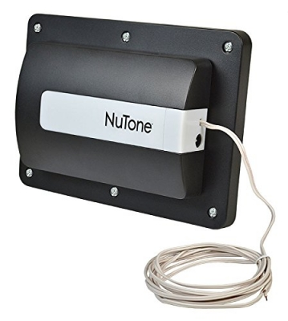
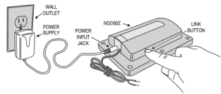

Nutone garage door controller¶
NuTone NGD00Z Smart Z-Wave Enabled Garage Door Controller¶

Overview¶
- A garage door opener remote command transceiver with built-in Z-Wave technology.
- Allows remote operation of a garage door opener using Z-Wave controllers.
- Acts as a Z-Wave repeater to improve communications within the Z-Wave mesh network.
Operation¶
- NGD00Z connects to the garage door opener’s pushbutton wall console terminals.
- A wireless tilt sensor mounts on the garage door and reports the door’s position to the NGD00Z.
- NGD00Z responds to Z-Wave commands from Z-Wave controllers to open or close the garage door.
- A warning indicator light flashes and a beeper sounds for 5 seconds before the door begins to move.
- If the door does not completely open or close, a second open or close command can be sent after 30 seconds.
- If the door does not completely open or close after the second attempt, the NGD00Z operation is suspended until a local garage door pushbutton is activated.
Specification¶
NGD00Z: - Power supply: in -120VAC, 0.8A, out - 12VDC, 2A - Operating temp: 4 ~ 122 oF - Audible alarm: 45db, 10 feet - Strobe: 360 lumens - Z-wave: 908.4 MHz
Tilt: - Battery: CR2032 coin cell - Battery life: 24 months - Range: 10 feet line-of-sign to NGD00Z
Inclusion/Exclusion to/from a network¶

- Put controller to Inclusion/Exclusion mode
- Press link button once to reset. Device will be included/excluded to zwave network.
Configuration description¶
There is no configuration for this device.